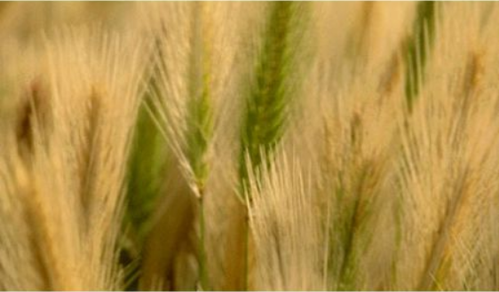

Nous vous souhaitons la bienvenue aux jardins coopératifs du Locle!
Présentation des jardins
Le Locle expérimente les jardins coopératifs

Reportage des 40 ans: au Locle on cultive lʹhumain au jardin
Les 7 coups de coeur de Monsieur Jardinier
PLACEHOLDER

PLACEHOLDER